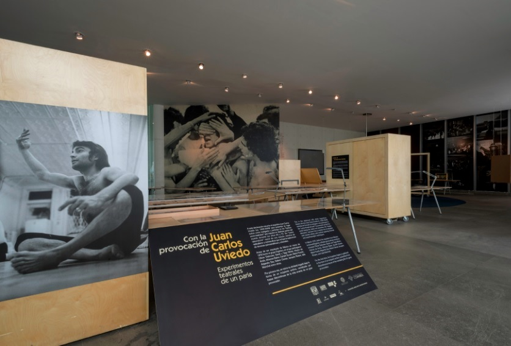

|
|
|
|
Del 21 de febrero al 2 de agosto de 2015 se realizó la muestra "Con la provocación de Juan Carlos Uviedo" en el MUAC (Museo Universitario de Arte Contemporáneo) de México.  Según escribieron los organizadores: "La exposición se divide en tres núcleos temáticos. El primer núcleo, Antes
de México, aborda la formación de Uviedo en Argentina, su paso por
Estados Unidos y Europa. El segundo núcleo, En México,
examina la formación del Grupo Teatral Ergónico y la expulsión de
Uviedo del país. Sumado a un retorno fugaz años después y su relación con
Olivier Debroise. El último núcleo, Después de México, se
concentra en el trabajo de Uviedo en Argentina con la fundación del Taller
de Investigaciones Teatrales y su estancia posterior en Brasil." Notas de prensa en Internet sobre la muestra: Chiari, Silvia Maturana y Pablo Navarro Espejo realizaron dos cortos (producidos por Adoquín Video Digital) que fueron exhibidos durante la muestra, llamados "La estrategia de la verdad" (Juan artista) y "Un tal Juan Uviedo" (Juan ser humano). Link al corto "La estrategia de la verdad" Link al corto "Un tal Juan Uviedo"
|